Cloud Witness in Windows Server vNext Technical Preview (2014-OCT)
In this blog post, we will look at configuring Cloud Witness, a new quorum option introduced in Windows Server vNext Technical Preview (OCT 2014 Release). Cloud witness was introduced as an option similar to a File Share Witness, but hosted on Azure without having to maintain any infrastructure within your datacenter. This allows us to have multi-site clusters without having the need to have a 3rd site as a witness.
Cloud Witness comes is useful in following scenarios
- DR Multi-Site stretched Clusters without having a 3rd site
- Clusters without shared Storage
- Guest Clusters hosted in Azure VMs
- Guest clusters hosted in Private Clouds
Since Cloud witness requires, internet connectivity, if there’s a Cluster with no internet connectivity, then we will not be able to leverage Cloud witness quorum configuration option.
Cloud witness uses REST APIs to interface with Azure Blob storage and it creates a single blob file per cluster. Because of this, hosting the cloud witness in Azure will only cost you less than a 1$ and the cost for hosting the witness file is negligible. Cloud Witness can be configured using PowerShell or using Failover Cluster Manager. In this, blog post I will demonstrate how we can configure Cloud Witness using Failover Cluster Manager.
Cloud Witness Architecture
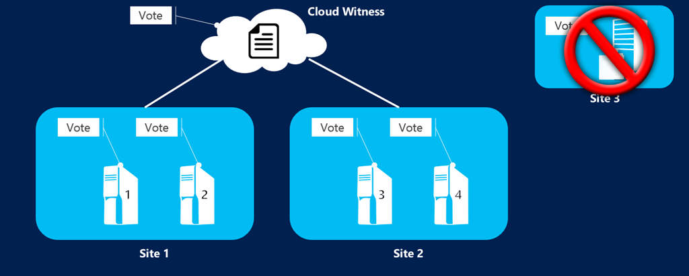
Cloud Witness vs File Share Witness Comparison
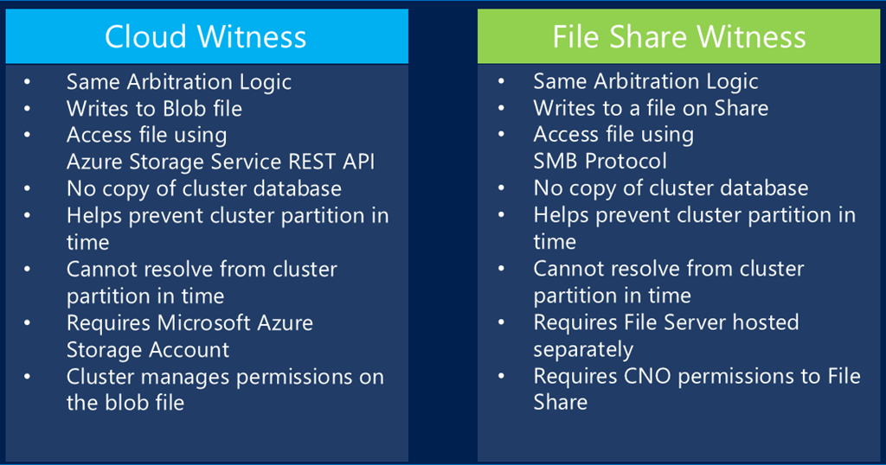
Step by Step Configuring Cloud Witness
Let’s have a look how we can configure Cloud Witness
Step 01 – Open Failover Cluster Manager
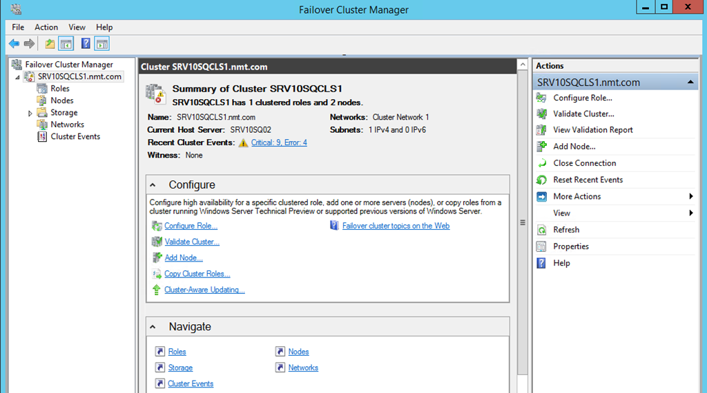
Step 02 – Right click on Cluster Name -> More Actions and select “Configure Cluster Quorum Settings”
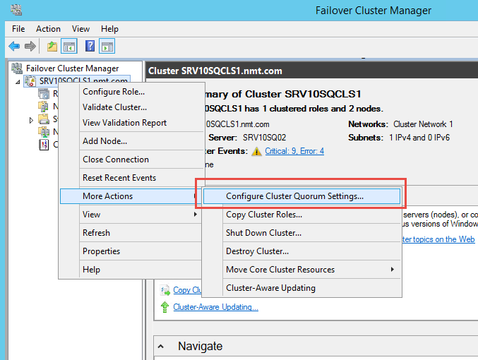
Step 03 – After selecting “Configure Cluster Quorum Settings”, this will launch wizard to configure Cloud Witness. Click Next
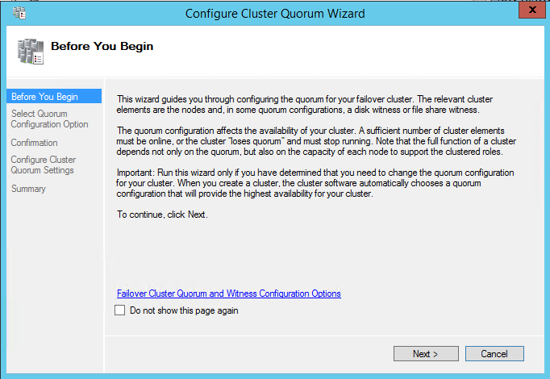
Step 04 – Select “Advanced Quorum Configuration” and then click next
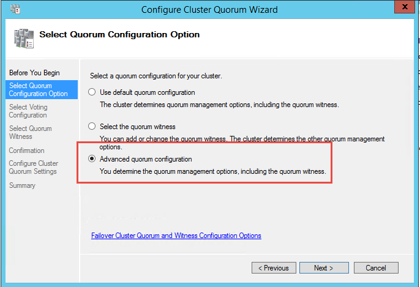
Step 05 – unless you want to change voting configuration, click next and proceed to the next step
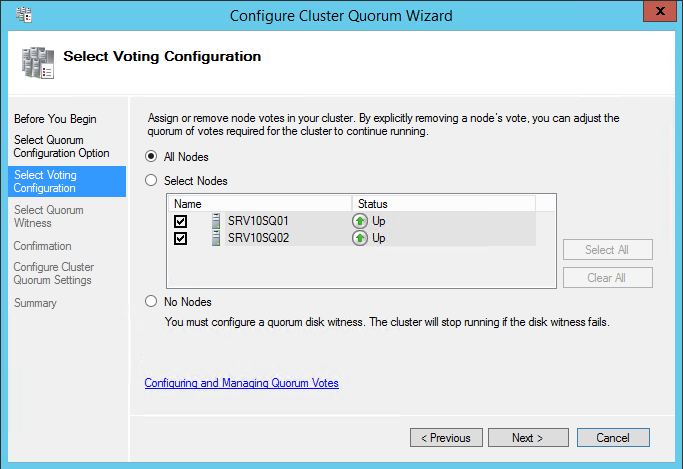
Step 06 – Select “Configure a cloud witness”
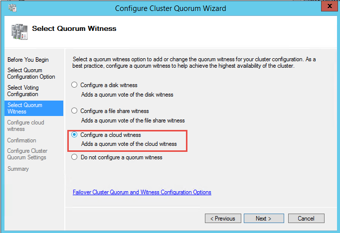
Step 07 – Next step requires us to obtain our Azure Storage Account details. Login Azure Management Portal https://manage.windowsazure.com and navigate to your Storage section.
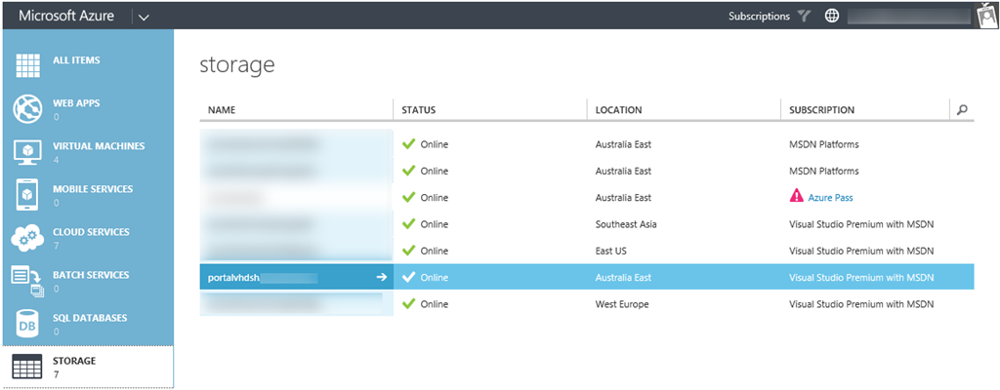
Step 08 – Next select your Storage Account and click on “Management Access Keys”
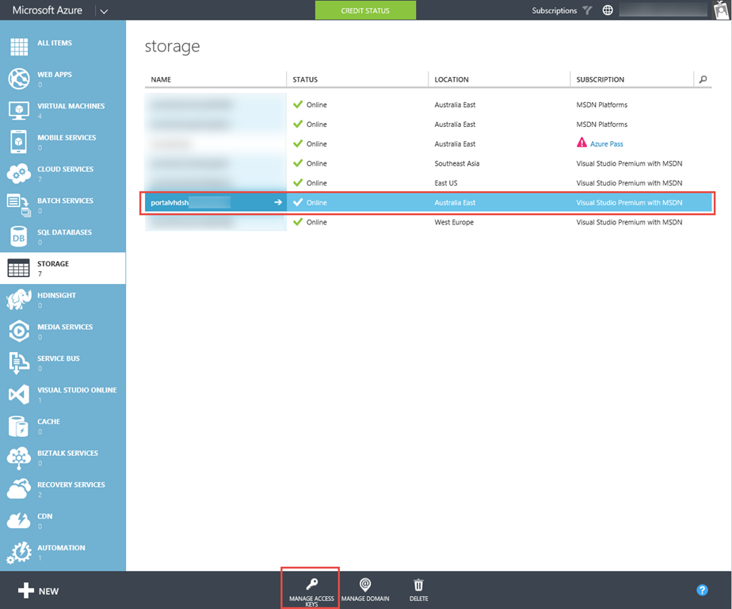
Step 09 – Note down your Storage Account Name and also Primary Access Key. We need to provide these values when we configure Cloud Witness within Failover Cluster Manager.
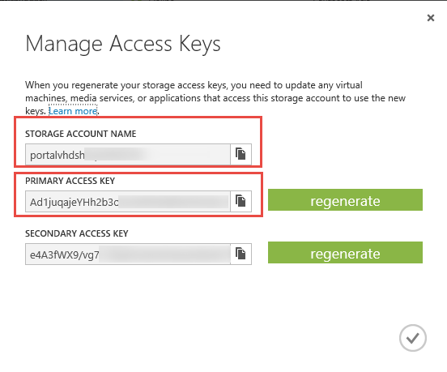
Step 10 – Provide Storage Account name and also Storage Account key
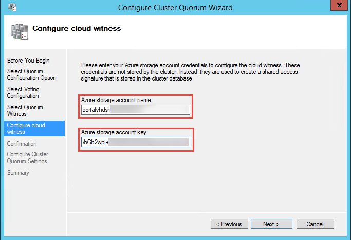
Step 11 – Confirmation Window describing recent changes to Cluster Quorum configuration.
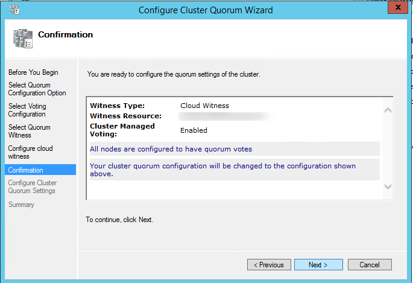
Step 12 – We have just completed configuring Cloud Witness. Navigate to your Cluster and under witness section you will notice that it’s now set to “Cloud Witness
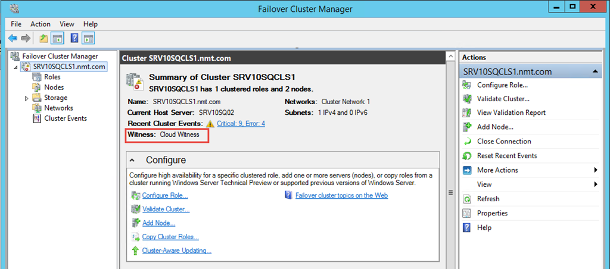
We can also Cloud Witness resources added to Cluster Core Resources
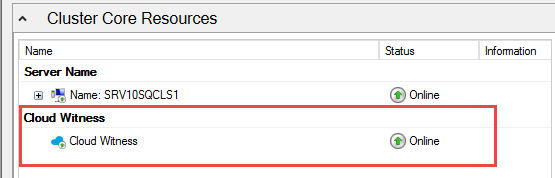
You can also have a look at below screen recording, which also includes a Failover Test using Cloud Witness